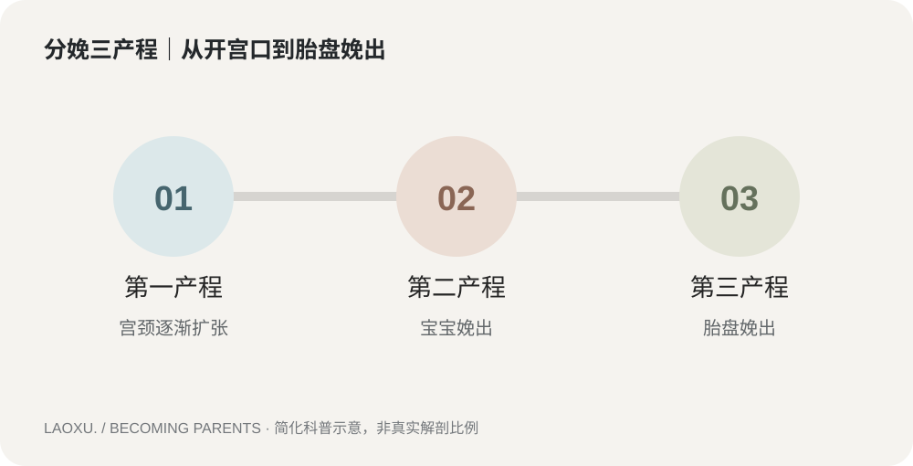
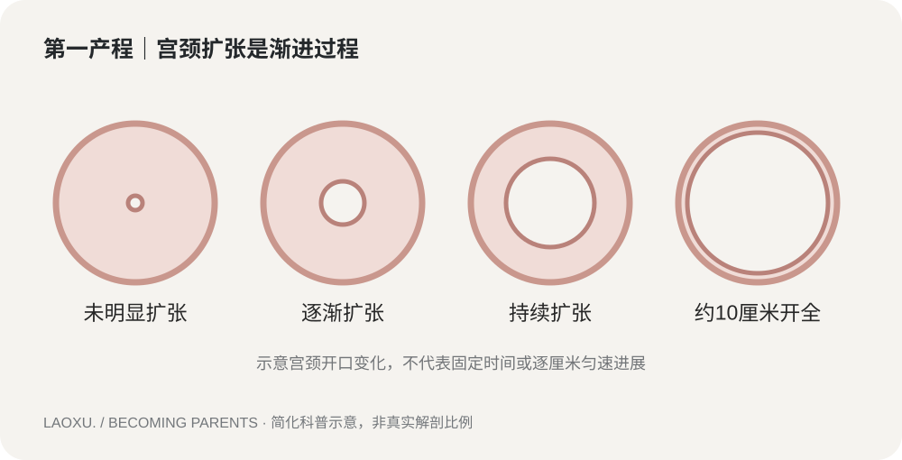
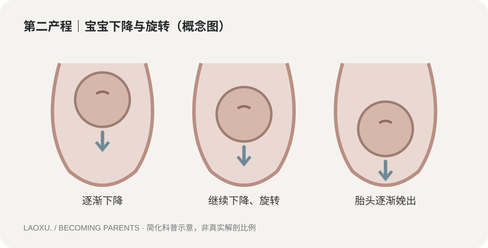
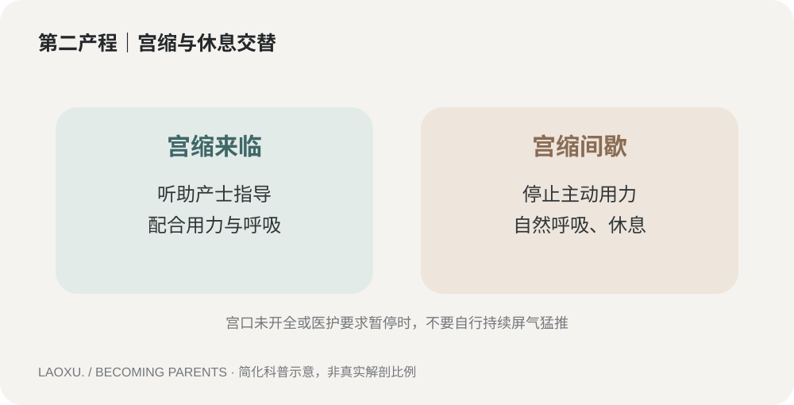
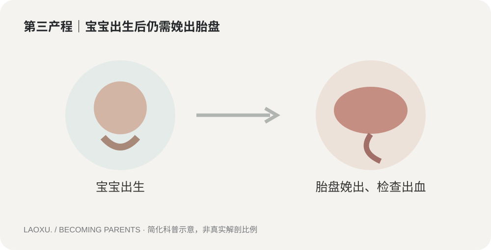

00 / THE BIG PICTURE
一页看懂：从家里到宝宝出生
你不是医生，也不必成为医生。你的任务是：观察变化、提供支持、及时沟通、记住医嘱。
01 / 在家记录宫缩
关注胎动
关注胎动
02 / 第一产程开宫口
休息与镇痛
休息与镇痛
03 / 第二产程听助产士指令
宝宝娩出
宝宝娩出
04 / 第三产程胎盘娩出
关注出血
关注出血
05 / 产后母婴观察
皮肤接触
皮肤接触

分娩流程示意图，仅用于理解阶段，不是医疗操作指令。
你只需要记住的四件事
- 看：产妇状态、胎动变化、破水和出血等异常。
- 问：她现在想要什么？医护下一步计划是什么？
- 帮：提供水、休息、体位和情绪支持（均以医护允许为前提）。
- 记：重要时间、镇痛决定、检查结果和医生交代。
01 / AT HOME
在家等待与出发
重点不是在家等到“足够痛”，而是识别是否需要联系产科。
宫缩记录模板
例如：19:20 开始，持续 50 秒；19:26 再次开始 → 间隔 6 分钟。记录开始到开始的间隔。
常见“5-1-1”只能作为部分医院的参考，不是所有人的统一入院门槛；以产科建议为准。
02 / FIRST STAGE
第一产程：开宫口时怎么陪

无痛分娩沟通卡
“她希望了解硬膜外镇痛。现在能否评估？有哪些禁忌、风险、等待时间和注意事项？”
是否镇痛由产妇与医疗团队共同决定，不需要硬撑，也不要替她作决定。
03 / SECOND STAGE
第二产程：宝宝娩出时怎么帮


你最有用的一句话
“我在这里。听助产士的，我们一次只做眼前这一件事。”
没有适合所有人的固定憋气秒数或发力公式。用力方式、体位与会阴保护由现场团队指导。
04–05 / AFTER BIRTH
胎盘娩出与产后最初两小时

YOUR ROLE / CONTINUOUS SUPPORT
陪伴技巧：做她的“支持搭档”
宫缩来时
靠近但不强迫触碰；问“要我握手还是帮你按腰？” 如果她不想说话，就安静陪着。可跟随她自然呼气，不要求固定节奏。
宫缩过去
帮她调整枕头、擦汗、休息；若医护允许，协助饮水、进食或改变姿势。不要持续问“还痛吗”。
她说“我不行了”
可以说：“我听到了，真的很难受。你希望我帮你叫助产士，还是先陪你安静一下？” 不要说“别人都能生，你也能”。
她改变主意想打无痛
支持她联系医护了解镇痛选项，不劝她硬撑，也不擅自承诺一定能立即安排。
医生提出干预
情况允许时帮忙问：“为什么需要？有多紧急？收益与风险是什么？是否有其他方案？” 紧急情况下以医疗处置优先。
SAFETY FIRST
这些情况，立即叫医护
不要等待，也不要靠网页自行判断
- 胎动明显减少或与平时不同。
- 怀疑破水，尤其液体呈绿色、棕色或有异味。
- 鲜红色或大量阴道出血、持续剧烈腹痛。
- 严重头痛、视物异常、抽搐、晕厥、胸痛或呼吸困难。
- 产后出血很多或持续增加、产妇意识异常。
- 宝宝呼吸困难、发青或反应明显差。
在家：立即联系产科急诊或当地急救服务；在医院：立即按铃呼叫医护。
DAD'S HANDOFF CARD
给医生 / 助产士的交接信息
勾选仅保存在当前浏览器，不能代替医院病历或医嘱。隐私敏感的健康信息不要输入公共网页。
DEEP DIVE